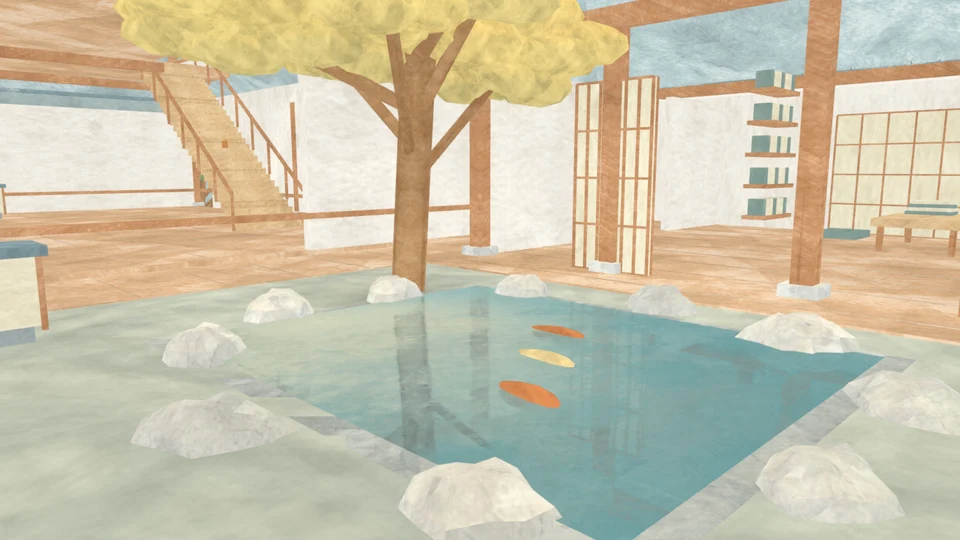

山城正在晨雾中苏醒
AN ARCHITECTURAL JOURNEY · 山の記憶
时间慢下来，
城的故事
才开始。
循着山风，走过木桥与回廊。
在一座古老的城里，遇见四季的留白。
季 節
01
山路 · The approach林间的第一眼，山城静立在风里。
SCROLL TO WANDER↓
01 / THE ARCHITECTURE山に寄り添う
一座城，
也是一段归途。
从层叠石垣到深深屋檐，薄霧城沿着山势慢慢生长。庭院把天空引入屋内，木廊把彼此分开的日常，轻轻连接。
这是一座虚构的山城。以日式木构与动画背景美术为灵感，在可行走的空间里，留下光、风和生活的痕迹。
空间关系示意 / NOT TO SCALE
三層沿真实楼梯，走向远山
一庭让光线成为房间的邻居
四季同一座城，不同的呼吸
WATERCOLOR SURFACE STUDY · 手绘表面习作
02 / MATERIAL MEMORIES
01 — 04木有年轮，
也有记忆。
被脚步磨亮的杉木地板，留着暖色的纹路。每一道细痕，都是曾经的日常。
旧木灰泥瓦片石材
继续滚动，靠近表面的时间。
03 / THE QUIET CONNECTION
相合，
便能相承。
柱与梁，各自留下一个缺口。
木头的分寸，让一座建筑站立。
滚动，让构件分开，再次相合。
简化榫卯示意 · 非历史构造复原01 柱 · POST02 梁 · BEAM03 木销 · PEG
04 / A GARDEN IN TIME移ろう季節
庭院不言，
四季作答。
一株老树，一池微光。
春花、夏荫、秋叶、冬雪，
在同一片庭院里，轮流停留。

秋 / A QUIET TURN OF GOLD
05 / PLACES TO PAUSE心を留める場所